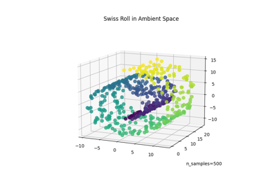

Quick Start Guide
Installation
To install TorchDR, run in the terminal:
pip install git+https://github.com/torchdr/torchdr
When to use TorchDR
For leveraging the power of GPU acceleration for faster computations. All the modules in TorchDR are designed to work seamlessly on the GPU by setting
device = 'cuda'.For comparing different dimensionality reduction methods in a fair and reproducible way. TorchDR maximizes code sharing across various methods, ensuring a fair benchmarking that emphasizes core differences.
For developing new dimensionality reduction approaches. TorchDR provides a modular and extensible framework that allows you to focus on the core ideas of your method, while the rest of the pipeline is taken care of.
Examples using AffinityMatcher:


TSNE embedding of the swiss roll dataset
TSNE embedding of the swiss roll dataset

Comparison of different DR methods and the use of affinity matcher
Comparison of different DR methods and the use of affinity matcher